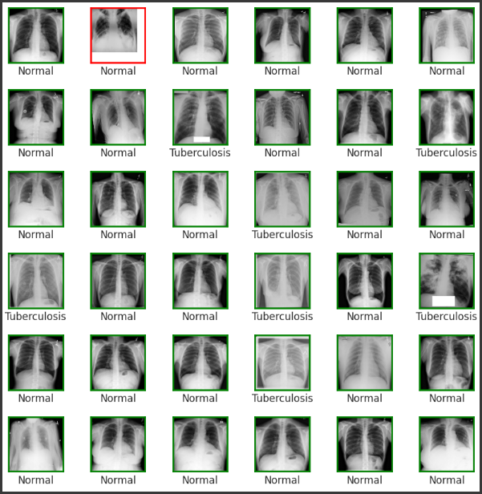
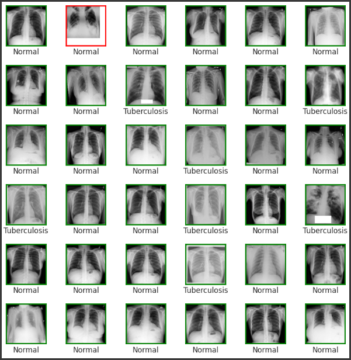
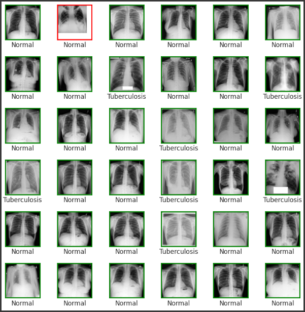

AI-Powered TB Detection System
AI Day 2025
University of Juba

Abstract
Tuberculosis (TB) continues to be a major global health threat, particularly in low-resource regions like South Sudan where access to expert diagnostics is limited. This project presents an AI-powered system designed to assist healthcare professionals by providing rapid, accurate, and accessible TB screening using chest X-ray images. Leveraging a deep convolutional neural network, the system can analyze medical images and deliver instant predictions, helping to reduce diagnostic delays and improve patient outcomes. With a demonstrated accuracy of 98% on test data, this solution has the potential to transform TB detection in underserved communities, supporting early intervention and better disease management.
Method
Our approach utilizes a deep convolutional neural network (CNN) specifically trained for tuberculosis detection from chest X-ray images. The workflow begins with the collection of a diverse dataset of labeled X-ray images, which is preprocessed to enhance image quality and normalize input dimensions. The CNN architecture is designed to extract hierarchical features from the images, enabling the model to distinguish between TB-positive and normal cases. The model is trained using supervised learning, optimizing for high sensitivity and specificity. During deployment, a user uploads a chest X-ray, and the system processes the image, runs it through the trained model, and instantly returns a prediction. This method ensures rapid, reliable, and scalable TB screening, even in settings with limited medical expertise.

Results
The AI-powered TB detection system was evaluated on a held-out test set of chest X-ray images. The model achieved an accuracy of 98%, with high sensitivity and specificity, indicating strong performance in identifying both TB-positive and normal cases. The confusion matrix below demonstrates the model’s ability to minimize false positives and false negatives, making it a reliable tool for clinical screening. These results suggest that the system can effectively support healthcare professionals in early TB detection, potentially reducing disease transmission and improving patient outcomes in resource-limited environments.
 


The prediction image on the right shows randomly selected chest X-rays from the test set. Correct predictions are highlighted with green borders, while incorrect predictions are marked with red borders. This visual representation demonstrates the model’s ability to accurately classify most cases, with only a few misclassifications, further supporting its reliability for clinical use.
References
1. World Health Organization. Global Tuberculosis Report 2024. Link
2. Tawsifur Rahman, et al. “Tuberculosis (TB) Chest X-ray Dataset.” Kaggle. Link
3. Lakhani, P. & Sundaram, B. (2017). Deep Learning at Chest Radiography: Automated Classification of Pulmonary Tuberculosis by Using Convolutional Neural Networks.
4. Tan, M., & Le, Q. V. (2021). EfficientNetV2: Smaller models and faster training. In International Conference on Machine Learning (pp. 10096-10106). PMLR.
2. Tawsifur Rahman, et al. “Tuberculosis (TB) Chest X-ray Dataset.” Kaggle. Link
3. Lakhani, P. & Sundaram, B. (2017). Deep Learning at Chest Radiography: Automated Classification of Pulmonary Tuberculosis by Using Convolutional Neural Networks.
4. Tan, M., & Le, Q. V. (2021). EfficientNetV2: Smaller models and faster training. In International Conference on Machine Learning (pp. 10096-10106). PMLR.